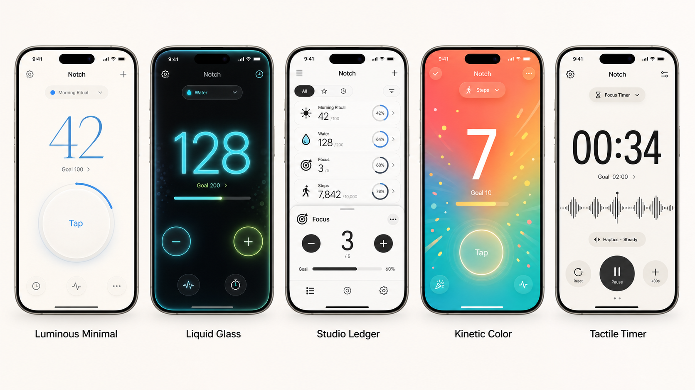

Notch is a polished, customizable counter app for daily rituals, habits, and streaks — fast to tap, satisfying to watch, and built entirely around your own themes, goals, and feedback.

Every feature below ships in the app today.
Track as many rituals, habits, or tallies as you want, each with its own name, icon, and identity.
From Luminous Minimal to Liquid Glass, pick a visual style that fits your mood — or set a theme per counter.
Solid accents or generated gradients that shift with every tap. Fully custom, fully yours.
Set a target and get rewarded — confetti, burst, or pulse animations when you hit it.
Flip any counter into a countdown with its own alert pattern when you reach zero.
Tactile feedback tuned per counter, so every tap feels like it counted.
Increment or decrement by custom step sizes for counters that don't move one at a time.
Match your Home Screen to your theme with a set of alternate icon designs.
Notch follows iOS appearance settings, or you can lock in the look you prefer.
Notch was designed by exploring distinct visual languages before converging on a single, cohesive experience.
Quiet, airy, goal-focused counting with a soft circular tap target.
Dark, neon, high-contrast interaction with glowing numeric feedback.
A dense list-and-detail interface for tracking multiple counters quickly.
Celebratory, high-energy visuals for movement and streak-like use cases.
Timer-first layout with monospaced numerals, waveform detail, and haptic controls.
Everything you create in Notch stays on your device. Read the full Privacy Policy.